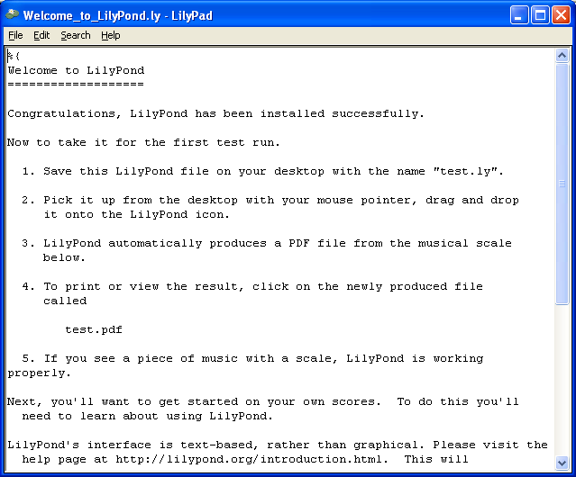

Windows
Note : LilyPond travaille sur des fichiers textuels. Il s’apparente plus à un langage de programmation plutôt qu’à un éditeur de partition en mode graphique. Avant de télécharger LilyPond, veuillez lire Entrée sous forme de texte.
Paquetages
Téléchargement
-
 Windows: LilyPond 2.18.2-1
Pour Windows 2000, XP, Vista, Windows 7 et 8.
Windows: LilyPond 2.18.2-1
Pour Windows 2000, XP, Vista, Windows 7 et 8.
Installation
- Faites un double clic sur le fichier téléchargé, puis suivez les instructions de l’installateur. Nous vous conseillons de conserver les paramètres proposés par défaut – options et répertoire d’installation. À la fin de la procédure, cliquez sur « Terminé ». LilyPond est installé.
Désinstallation
Pour désinstaller LilyPond, vous pouvez au choix :
- À partir du répertoire LilyPond présent dans le menu « Démarrer », cliquer sur l’icone « Supprimer ». Cliquez ensuite sur le bouton « Terminé » une fois la désinstallation effectuée.
- À partir du gestionnaire de programmes accessible depuis le Panneau de configuration, choisissez LilyPond, puis prenez l’option « Supprimer ». Cliquez ensuite sur le bouton « Terminé » une fois la désinstallation effectuée.
Lancement en ligne de commande
Note : Si vous préférez l’interface graphique mentionnée plus avant, ne tenez pas compte de ce qui suit.
Windows et la ligne de commande
Le moyen le plus pratique d’utiliser les programmes de LilyPond est d’ajouter à la variable d’environnement « path » le chemin vers le répertoire contenant les exécutables de LilyPond.
- Ouvrez le panneau de configuration et accédez aux « Propriétés système ». Dans l’onglet « Avancé », actionnez le bouton « Variables d’environnement ».
-
Dans la liste des variables système, sélectionnez « Path » et cliquez
sur le bouton « Modifier ». Dans la fenêtre qui s’est ouverte, ajoutez
aux « Valeurs de la variable » le chemin au répertoire contenant les
fichiers exécutables de LilyPond, comme suit :
[chemins déjà définis];RÉP\LilyPond\usr\bin
Note : RÉP sera en règle générale
C:\Program Files (x86)pour un système 64 bits etC:\Program Filespour du 32 bits.puis cliquez le bouton « OK » pour fermer la fenêtre.
Lancement des exécutables
Les exécutables de LilyPond – tels que lilypond,
lilypond-book et convert-ly entre autres – peuvent
se lancer en ligne de commande :
lilypond test.ly
Compilation d’un fichier
Note : Les instructions qui suivent partent du principe que vous utilisez l’éditeur LilyPad fourni. Si vous utilisez l’un des programmes répertoriés dans Facilités d'édition, référez-vous à leur documentation respective en cas de problème.
Étape 1. Création d’un fichier ‘.ly’
Double-cliquez sur l’icone LilyPond qui se trouve sur le bureau. S’ouvre alors un fichier d’exemple.
Dans le menu, sélectionnez Fichier > Enregistrer sous
(Save as…). Ne prenez pas l’option Fichier >
Enregistrer (Save) pour ce fichier exemple : LilyPond attend un
nom de fichier valide.

Affectez un nom à votre fichier, comme par exemple ‘test.ly’.

Étape 2. Compilation
La transformation d’un fichier LilyPond en partition s’obtient par compilation. Celle-ci peut se lancer de différentes manières : par glisser-déposer, par un clic de droite, par un double clic ou encore en ligne de commande (dans une fenêtre d’interpréteur DOS). Nous examinerons ici les trois premières options.
1. Faire glisser puis déposer le fichier sur l’icone LilyPond

Bien qu’il ne semble pas se passer grand chose, deux fichiers – ‘test.log’ et ‘test.pdf’ – devraient apparaître après quelques instants sur votre bureau.
2. Ouvrir le menu contextuel par un clic-droit, puis en prendre
l’option Generate PDF … (Générer le PDF).

3. Faire un double-clic sur le fichier ‘test.ly’.
Étape 3. Visualisation du résultat
‘test.pdf’ contient la gravure de votre fichier ‘test.ly’. Un double-clic sur son icône devrait l’ouvrir dans votre lecteur PDF :

Autres commandes
Pour créer un nouveau fichier, sélectionnez Fichier > Nouveau
à partir de n’importe quel fichier déjà existant ou bien
Fichier > Ouvrir pour reprendre un fichier sauvegardé. La
modification d’un fichier existant est aussi accessible à partir de
l’option Edit source (Éditer la source) du menu
contextuel.

Pensez à toujours enregistrer votre travail avant de compiler votre fichier. Si LilyPond ne crée pas de PDF ou que le résultat ne correspond pas à vos attentes, consultez le fichier de journalisation – généré au fil du processus de compilation – et vérifiez qu’il ne comporte pas d’erreur.

Ce fichier journal est remplacé à chaque compilation de votre fichier LilyPond.
Pensez à fermer le fichier dans votre lecteur de PDF à chaque fois que vous relancez la compilation, afin d’être sûr que celle-ci arrive à son terme.
Mention légale
Tous les logos et images des produits sont des marques déposées ou sont protégés par le droit d’auteur.
Le « rectangle aux quatre couleurs » n’est pas une marque déposée. Il a été créé par Rohitbd et distribué sous la licence GNU Free Documentation License version 1.2. Nous avons trouvé cette image sur cette page de Wikimedia Commons.
Autres langues : English, català, česky, deutsch, español, magyar, italiano, 日本語, nederlands, 中文.
About automatic language selection.